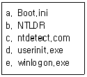
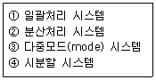
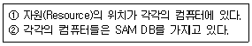

PC정비사-1급 (2013-10-06 기출문제)
1과목: PC운영체제
1. 리눅스에서 ‘test’라고 하는 파일 내에 ‘ICQA’라는 단어를 찾기 위한 명령은?
- grep test ICQA
- grep ICQA test
- find -name ICQA test
- find -name test ICQA
(정답률: 60%)

2. 두 개 이상의 프로세스를 동시에 처리할 수 없으므로, 프로세스에 대한 순서를 결정하는 것은?
- 상호 배제
- 임계 구역
- 동기화
- 시분할 처리
(정답률: 47%)
3. 시스템 도구 모음의 하위 기능으로 잘못된 것은?
- 시스템 구성 유틸리티
- 디스크 조각 모음
- 디스크 정리
- 예약된 작업
(정답률: 57%)
4. Windows XP의 원격지원 서비스에 대한 설명 중 잘못된 것은?
- Windows Messenger 또는 전자 메일로도 원격지원 요청이 가능하다.
- 상대방의 IP 주소로도 원격 지원 요청을 할 수 있다.
- [시작]-[모든 프로그램]-[원격지원]을 선택하여 사용한다.
- 원격지원 서비스는 컴퓨터에 문제가 있을 경우 문제가 발생한 컴퓨터가 있는 장소에서 도와줄 사람이 도움 받을 사람의 컴퓨터를 직접 조작하는 것이 아닌, 인터넷을 이용하여 도움 받을 사람의 컴퓨터에 접속하여 제어를 하는 것을 말한다.
(정답률: 65%)
5. 에러를 자신이 찾아 수정할 수 있는 코드는?
- 패리티 코드(Parity Code)
- 해밍 코드(Hamming Code)
- 그레이 코드(Gray Code)
- BCD코드(Binary Coded Decimal)
(정답률: 61%)
6. 디스크 어레이(Array) 구축 방식 중 Windows XP 에서 구축할 수 없는 것은?
- Raid-0 볼륨
- Raid-1 볼륨
- Raid-4 볼륨
- Raid-5 볼륨
(정답률: 58%)
7. Windows XP의 부팅과 관련된 파일들이다. 부팅 과정에서 사용되는 순서대로 나열된 것은?

- a - b - c - d - e
- b - c - a - d - e
- b - a - c - e - d
- a - e - c - b - d
(정답률: 52%)
8. Bench Mark Test의 정의로 올바른 것은?
- Virus에 감염되기 쉬운 정도를 구분하기 위한 보안 점검으로 A, B, C, D 네 등급으로 나뉜다.
- 하드웨어나 소프트웨어의 개발 단계에서 상용화하기 전에 실시하는 제품 검사 작업으로, 선발된 잠재 고객으로 하여금 일정 기간 무료로 사용하게 한 후에 나타난 여러 가지 오류를 수정, 보완한다.
- 비교 대상을 두고 하드웨어나 소프트웨어의 성능을 비교 시험하고 평가하는 것을 말한다.
- System의 각 장치의 Error 발생 여부를 확인하는 것으로 시스템의 개발 초기 단계에서 이루어진다.
(정답률: 55%)
9. Windows XP의 CMD 명령 창에서 autoexec.bat 안의 Text로 작성된 내용을 화면으로 보고자 할 때 올바른 명령어는?
- dir autoexec.bat
- type autoexec.bat
- read autoexec.bat
- confirm autoexec.bat
(정답률: 66%)
10. Windows XP 제어판에서 각 아이콘의 해당 파일이 잘못 연결된 것은?
- 내게 필요한 옵션 - access.cpl
- 인터넷 - internet.cpl
- 디스플레이 - desk.cpl
- 마우스 - main.cpl
(정답률: 44%)
11. 운영체제의 발달과정 순서로 올바른 것은?

- ① → ④ → ③ → ②
- ① → ② → ③ → ④
- ① → ③ → ④ → ②
- ④ → ③ → ② → ①
(정답률: 41%)
12. NTFS 에 대한 설명으로 잘못된 것은?
- 파일이나 폴더 등에 암호를 설정할 수 있다.
- Windows 모든 버전에서 호환 가능하다.
- 클러스터 크기가 작아 용량의 낭비를 줄여준다.
- 플로피 디스크에서는 사용할 수 없다.
(정답률: 59%)
13. Windows XP의 Home Edition과 비교 했을 때 Windows XP Professional Edition에만 있는 기능으로 잘못된 것은?
- 파일 및 응용 프로그램의 액세스 제어
- 원격 설치 서비스(RIS)
- 파일 시스템 암호화
- 동적 디스크
(정답률: 45%)
14. 시스템복원 기능은 소프트웨어적 문제를 해결할 수 있다. 다음 항목 중 시스템 복원 기능을 이용하여 복원할 수 없는 것은?
- 사용자용 문서 파일
- Windows용 시스템 파일
- Windows 응용 파일
- 레지스트리
(정답률: 74%)
15. Windows XP Professional에서 다음과 같은 특징을 갖는 환경은?

- Domain 환경
- Workgroup 환경
- Professional 환경
- Server 환경
(정답률: 69%)
2과목: PC주변기기
16. IRQ에 대한 설명 중 잘못된 것은?
- 각 주변기기들의 작동을 위해 CPU가 작업을 잠시 멈출 것을 요구하는 통로이다.
- 키보드, 마우스, 하드디스크, 사운드카드, 프린터 등 대부분의 주변기기들이 1개 혹은 2개 이상의 IRQ를 차지하는 경우가 많다.
- 주변기기는 1개의 IRQ를 2개나 3개의 주변기기에 공유시킬 수 있어 시스템 자원을 효과적으로 쓸 수 있다.
- COM2 및 COM4의 입력 라인은 IRQ1을 이용한다.
(정답률: 52%)
17. Flash ROM에 대한 설명 중 올바른 것은?
- 데이터를 한 번만 기록할 수 있는 ROM이다.
- 자외선을 이용하여 자료를 삭제 한다.
- 자료의 부분 소거와 부분 기록이 가능하다.
- 자료의 삭제/기록은 ROM Writer로만 가능하다.
(정답률: 47%)
18. 인터레이스 모드 모니터에서 주사율과 수직 주파수간의 관계는?
- 주사율 = 수직 주파수
- 주사율 = 수직 주파수/2
- 주사율 = 수직 주파수*2
- 주사율 = 수직 주파수/3
(정답률: 53%)
19. 모든 컴퓨터는 네트워크 상에서 자신을 구분하기 위한 유일한 주소를 가지고 있다. 네트워크 인터페이스 카드(NIC) 제조 시에 부여된 48bit 물리적 주소는?
- TCP 주소
- IP 주소
- MAC 주소
- LAN 주소
(정답률: 66%)
20. Intel 사에서 제조한 CPU가 아닌 것은?
- 요크필드Q9300
- 레고르250
- 울프데일E8200
- 샌디브릿지2500
(정답률: 57%)
21. DDR3 SDRAM 에 대한 설명 중 잘못된 것은?
- 한 클럭당 2개의 데이타를 전송한다.
- 일반 RDRAM보다 월등히 빠른 속도를 가지고 있다.
- DDR3 SDRAM으로 4GB를 장착하기 위해서는 2GB 용량의 램 두 개를 꽂아야 한다.
- 램을 장착하고 남은 램 뱅크는 그대로 두면 된다.
(정답률: 66%)
22. 현재 KS X 5002 규정에 국가 표준으로 공인되어 있는 한글 자판은?
- 2벌식 자판
- 3벌식 자판
- 3벌식 최종자판
- 3벌식 390 자판
(정답률: 69%)
23. 프린터에서 사용되는 전송모드에 대한 규약이 아닌 것은?
- EPP
- ECP
- SPP
- MPP
(정답률: 65%)
24. 적외선을 이용하는 무선 통신 인터페이스에 사용되는 기술은?
- IEEE 1394
- SCSI
- USB
- IrDA
(정답률: 56%)
25. 운영체제에 아무런 이상이 없이 빠른 속도로 그래픽 카드를 제어할 수 있는 표준 규격이 아닌 것은?
- DirectX
- Open GL
- DCI
- DMA
(정답률: 56%)
26. 레이드를 구성하고 있는 하드디스크 중 하나에 문제가 생겼을 때 복구를 할 수있는 시스템이 아닌 것은?
- 레이드 0
- 레이드 1
- 레이드 0+1
- 레이드 5
(정답률: 55%)
27. MIDI에 관한 설명 중 올바른 것은?
- 전자악기와 컴퓨터간의 데이터 전송을 위한 인터페이스이다.
- 기본적으로 4채널을 사용하여 각 악기의 상태나 컨트롤 등을 전송한다.
- 별도의 인터페이스가 필요 없다.
- General MIDI란 미디에서 사용하기 위한 소리를 담는 데이터를 말한다.
(정답률: 45%)
28. USB, PS/2, COM 포트에 연결되는 마우스에 사용되는 전압으로 올바른 것은?
- 2.8V
- 3V
- 5V
- 5.5V
(정답률: 61%)
29. 컴퓨터의 핵심인 CPU는 어떤 집적회로(IC)인가?
- SSI
- MSI
- LSI
- VLSI
(정답률: 53%)
30. 다음 인터페이스 중 가장 빠른 속도를 지원하는 것으로 올바른 것은?
- ISA
- AGP 1배속
- PCI
- PCI-Express
(정답률: 78%)
3과목: 디지털 논리회로
31. 입력이 A와 B이고 출력이 C인 AND GATE가 있다. 다음중 C 가 1 이 되는 상태는 언제인가?
- A=1, B=0
- A=1, B=1
- A=0, B=0
- A=0, B=1
(정답률: 63%)
32. 부호 비트를 포함한 총 5개의 비트를 사용하여 10진수 (+13)을부호화된 2진수로 표현하면?
- 00111
- 10111
- 11101
- 01101
(정답률: 55%)
33. 전가산기의 올바른 구성은?
- 반가산기 2개와 AND 게이트 1개
- 반가산기 2개와 AND 게이트 2개
- 반가산기 2개와 OR 게이트 1개
- 반가산기 2개와 OR 게이트 2개
(정답률: 49%)
34. MOS 논리회로의 특징으로 잘못된 것은?
- 소비 전력이 작다.
- 높은 입력 임피던스이다.
- 잡음 여유도가 크다.
- TTL과의 혼용이 매우 용이하다.
(정답률: 60%)
35. 하나의 입력을 갖고 그것을 몇개의 출력으로 분산하는 논리회로는?
- 디멀티플렉서
- A/D 변환기
- 카운터
- 기억장치
(정답률: 73%)
4과목: PC유지보수
36. PC에서 발생하는 전자파나 누전을 방지하기 위한 방법으로 잘못된 것은?
- 접지 콘센트를 이용하여 접지를 한다.
- 전자파 차단 효과가 있는 모니터 보안경이나 PC 케이스를 사용한다.
- 모니터의 화면재생빈도를 조절한다.
- 접지를 위한 도선은 굵게 하는 것이 좋다.
(정답률: 58%)
37. ATI의 크로스파이어(CrossFire)를 사용하기 위한 조건으로 잘못된 것은?
- 메인보드에는 익스프레스 X200 칩셋 이상이 장착되어야 한다.
- 동작 클럭만 일치하다면 AMD와 NVIDIA의 VGA로도 구성이 가능하다.
- PCI-Express 기반이므로 구형 AGP 기반 그래픽카드는 사용이 불가능하다.
- 크로스파이어 에디션 그래픽카드를 반드시 마스터로 설정하고, 표준 그래픽카드는 슬레이브로 설정해야 한다.
(정답률: 58%)
38. Windows XP 기본 Program 내에서 NTFS 파일 시스템을 FAT32 파일 시스템으로 변환하는 방법으로 올바른 것은?
- convert 명령어를 사용해 FAT32 파일 시스템으로 변환한다.
- "format 드라이브명 /fs:fat32" 을 사용하여 드라이브를 다시 포맷한다.
- NTFS 파일 시스템을 사용하는 파티션부터 삭제한다.
- "del 드라이브명 /ntfs" 명령을 사용하여 NTFS 파일 시스템을 삭제한다.
(정답률: 50%)
39. 메인보드의 각종 입출력 단자를 외장 시디롬, 스피커, 마우스, 등과 연결하기 위해 사용하는 것은?
- 백 패널(Back Panel)
- 스페이서(Spacer)
- 서플라이(Supply)
- 커넥터(Connector)
(정답률: 51%)
40. 도스모드에서 CD-ROM 인식과 관련이 없는 파일은?
- AUTOEXEC.BAT
- MSCDEX.EXE
- OAKCDROM.SYS
- SYSTEM.INI
(정답률: 60%)
41. Windows XP에서 프로그램의 설치와 삭제에 대한 설명 중 잘못된 것은?
- 프로그램이 설치된 폴더를 그냥 삭제해버리면 레지스트리에 프로그램 설치정보가 남아 문제가 발생할 수 있다.
- 삭제된 프로그램을 다시 설치하려면 휴지통의 복원 기능을 이용한다.
- 부팅 시 시작 프로그램으로 실행되는 프로그램의 수가 많을 경우 시스템이 느려질 수 있으므로, 불필요한 프로그램은 제거한다.
- 프로그램은 하드디스크에 설치되기 때문에, 하드디스크에 쓰고 지우기를 반복하는 동안에, 하드디스크 중간 중간에 빈공간이 많이 생기는 단편화 현상이 심해질 수 있다.
(정답률: 65%)
42. POST 과정의 순서가 바르게 나열된 것은?
- 시스템 버스 테스트 - 그래픽 카드 테스트 - 메모리 테스트 - 키보드 테스트 - 디스크 테스트 - P&P 기능 동작 - CMOS 내용확인 - DMI 기능 동작
- DMI 기능 동작 - 그래픽 카드 테스트 - 메모리 테스트 - 키보드 테스트 - 디스크 테스트 - P&P 기능 동작 - CMOS 내용확인 - 시스템 버스 테스트
- 시스템 버스 테스트 - P&P 기능 동작 - 메모리 테스트 - 키보드 테스트 - 디스크 테스트 - 그래픽 카드 테스트 - CMOS 내용확인 - DMI 기능 동작
- 시스템 버스 테스트 - CMOS 내용확인 - 그래픽 카드 테스트 - 메모리 테스트 - 키보드 테스트 - P&P 기능 동작 - 디스크 테스트 - DMI 기능 동작
(정답률: 56%)
43. Windows를 사용하던 중 “KERNEL32.DLL에서 잘못된 연산이 수행되었습니다.”라는 메시지가 나타나는 이유로 잘못된 것은?
- 어플리케이션간 메모리 충돌이 일어날 때
- KERNEL32.DLL의 버전이 다르거나 손상된 경우
- CPU와 메모리의 FSB가 맞지 않을 경우
- 메인 메모리가 불량인 경우
(정답률: 61%)
44. 아날로그 비디오 신호를 받고 보낼 수 있는 그래픽 카드에 붙이는 이름은?
- MPEG
- VIVO
- DVI
- CRT
(정답률: 58%)
45. Windows XP 사용 중에 마우스가 움직이지 않고 시스템이 다운된 것처럼 갑자기 멈춘 다음 잠시 후 다시 작동될 때 해결 방법으로 올바른 것은?
- 파일시스템을 FAT32에서 NTFS로 변경한다.
- 마우스와 키보드 모두 USB로 사용할 경우 발생하므로 둘 중 하나를 PS/2 방식으로 교체한다.
- 메모리에 상주하는 시작프로그램과 서비스를 줄이고 불필요한 인터페이스를 제거해 리소스를 확보한다.
- 디스크 검사를 실행해 불량 섹터를 치료하거나 새로운 부트 섹터와 마스터 부트 레코드(MBR)를 만들어 해결한다.
(정답률: 74%)
46. Award BIOS 내용 중 “BIOS Features Setup” 의 일부 항목에 대한 설명이다. 각 항목과 그 설명이 잘못된 것은?
- “Virus Warning”- Enable 된 경우 하드디스크의 부트 섹터에 쓰기 금지가 설정된다.
- CPU Level 2 Cache - Intel CPU의 경우 L2 캐쉬를 모두 사용하지 않으므로 Disable로 설정한다.
- CPU Level 2 Cache ECC Check - CPU에 따라 ECC 기능이 있는 것과 없는 것이 있으므로 항상 Enable로 설정할 필요는 없다.
- Boot Sequence - 부팅시 부트섹터를 찾는 순서를 나타낸 것으로, Windows가 설치된 PC를 빠르게 부팅하려면 ‘C only’로 설정하는 것이 좋다.
(정답률: 54%)
47. 다음은 PC 업그레이드에 관한 설명이다. 업그레이드라고 볼 수 없는 것은?
- 2GB의 RAM을 4GB로 확장하였다.
- 32배속 CD-ROM 드라이브를 블루레이 드라이브로 교체했다.
- A10 5800K CPU를 FX 8350으로 교체하였다.
- 5.1 Channel 사운드카드를 8.1 Channel 사운드카드로 교체했다.
(정답률: 52%)
48. 컴퓨터용 휴즈에 대한 설명 중 잘못된 것은?
- 유리로 된 2~3cm의 원통형 휴즈를 사용한다.
- 휴즈는 전원공급기 외부에서 쉽게 교체할 수 있게 구성되어 있다.
- 분해 시, 감전의 위험이 있으므로 전기선을 콘센트에서 분리해 작업하는 것이 좋다.
- 휴즈는 사용전압과 전류에 맞는 것을 사용해야 한다.
(정답률: 75%)
49. PC 전원 공급 장치의 출력전압이 정확한가를 측정하고자 할때 회로시험기의 선택스위치 설정상태로 올바른 것은?
- DCV
- ACV
- R
- mA
(정답률: 54%)
50. 메인보드에 대한 다음 설명 중 잘못된 것은?
- 칩셋은 메인보드 상에 납땜으로 고정된 부품으로서 메인보드에서 사용 가능한 CPU 및 메모리 종류 등을 결정하는 중요한 요소이다.
- 시스템의 안정성을 위하여 메모리(RAM) 슬롯의 경우 전체 슬롯을 사용하지 말고, 1개 또는 2개의 여유 슬롯을 남겨 두어야 한다.
- 새로운 부품을 추가하고자 할 때 그 부품이 메인보드에서 지원 가능한 형태인지를 확인해야 한다.
- 만약 장착한 CPU의 성능에 비해 실제 동작 속도가 현저히 낮게 동작한다고 판단될 경우 BIOS의 캐쉬 설정 부분이 활성 상태로 되어 있는지 확인하고 비활성으로 되어 있으면 활성으로 설정을 바꾼다.
(정답률: 72%)
5과목: PC네트워크
51. 회선 경쟁 선택(Contention) 방식의 프로토콜에 관한 설명으로 올바른 것은?
- 트래픽이 많은 멀티포인트 회선에 사용할 경우에는 비효율적이다.
- 이 방식의 프로토콜에는 토큰링 토큰버스와 같은 방식이 있다.
- 터미널의 통신량, 사용빈도에 따라 경쟁 선택의 기회를 차등적으로 부여할 수 있다.
- 경쟁 선택이 동시에 일어나도 데이터가 충돌하여 유실되는 경우가 있다.
(정답률: 63%)
52. FTP에 대한 설명 중 잘못된 것은?
- 익명의 FTP 사이트에 접속할 때는 계정 대신에 IP주소를 적는다.
- 원격지 간에 파일을 송수신하는 프로토콜이다.
- 원격지 호스트에 사용자 계정이 있는 경우 사용 가능한 서비스이다.
- 익명(ANONYMOUS)의 FTP는 별도의 계정이 없어도 파일 수신이 가능하다.
(정답률: 50%)
53. 스위칭 기술에 대한 설명으로 잘못된 것은?
- 전송 포맷에 따라 프레임 스위치와 셀 스위치로 분류한다.
- 로드를 분산함으로써 시스템의 다운을 방지 할 수 있다.
- 논리적으로 라우터와 비슷한 방식으로 동작한다.
- 다중의 발신지와 다중의 도착지를 가진 다수의 패킷 이동시에 전송되는 경우에 특히 고성능을 낼 수 있다.
(정답률: 42%)
54. ATM 스위치를 설명한 것으로 잘못된 것은?
- 대량의 데이터를 전송하는데 적합하다.
- 53Byte 셀을 전송한다.
- ATM 셀은 가상 회선을 통해 셀이 전송된다.
- 패킷 단위로 데이터를 전송한다.
(정답률: 32%)
55. 서버기반 소규모 네트워크(5대 이하)를 구축하고자 한다. 일반적으로 필요한 장비가 아닌 것은? (단 현재 전용선에 연결되어 있으며, 모든 컴퓨터는 LAN으로 묶여야함.)
- Hub
- Repeater
- LAN Cable
- NIC
(정답률: 64%)
56. 전자우편(E-mail)의 암호화와 관련된 PGP(Pretty Good Privacy)에 대한 설명으로 가장 옳은 것은?
- 인터넷 표준안으로 구현이 비교적 어렵다
- 높은 보안성으로, 주로 군사용 또는 은행에서 사용한다.
- 익명의 메시지를 허용하지 않는다.
- 분산된 키 인증방식을 사용한다.
(정답률: 54%)
57. IP 주소 체계에서 가장 많은 네트워크를 수용할 수있는 클래스는?
- A 클래스
- B 클래스
- C 클래스
- D 클래스
(정답률: 50%)
58. LAN에 사용되는 방식 중 전송속도가 가장 빠른 것은?
- 10BASE-2
- FDDI
- 10BASE-5
- 10BASE-T
(정답률: 66%)
59. 유동 IP와 고정 IP에 대한 설명으로 잘못된 것은?
- ADSL이나 케이블 모뎀을 사용하는 초고속 인터넷 환경에서는 기본적으로 유동 IP가 부여된다.
- 유동 IP는 DHCP 방식에 의해 제공된다.
- 고정 IP는 웹서버 IP 주소로 사용할 수 없다.
- 유동 IP에서도 VPN 장비를 연결하면 사설 네트워크를 구성할 수 있다.
(정답률: 52%)
60. TCP/IP를 설정할 때 DNS 서버를 설정하게 된다. DNS 서버를 지정하여 사용하는 이유로 올바른 것은?
- 통신 메시지를 처음으로 전달하는 네트워크 장치를 지정하기 위해
- 숫자로 구성된 IP 주소 대신, 문자로 구성된 인터넷 주소를 사용하기 위해
- 외부의 불법 침입에 대비하여 내부 자료를 보호하기 위해
- Windows를 사용하는 네트워크에서 이름으로 컴퓨터를 확인/검색하기 위해
(정답률: 57%)
grep은 파일 내에서 특정 문자열을 찾는 명령어이다.
따라서 "grep ICQA test"는 'test' 파일 내에서 'ICQA'라는 문자열을 찾는 명령어이다.
반면에 "grep test ICQA"는 'ICQA' 파일 내에서 'test'라는 문자열을 찾으려는 명령어이므로 틀린 답이다.
또한 "find -name ICQA test"와 "find -name test ICQA"는 파일 이름을 찾는 명령어이므로 이 문제와는 관련이 없다.